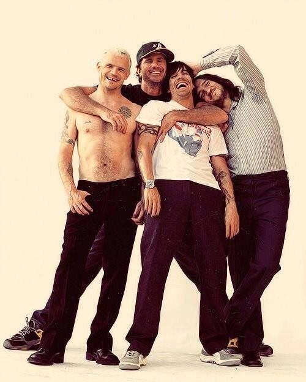

Red Hot Chili Peppers
Red Hot Chili Peppers é uma banda de rock dos Estados Unidos formada em Los Angeles, Califórnia, em 13 de fevereiro de 1983, considerada uma das maiores bandas de todos os tempos. O estilo musical do grupo consiste principalmente no funk rock, bem como elementos de outros gêneros, tais como punk, rock alternativo, rap rock e rock psicodélico. A banda é constituída pelos membros fundadores Anthony Kiedis (vocais) e Flea (baixo), juntamente com o baterista de longa data Chad Smith e o guitarrista John Frusciante.